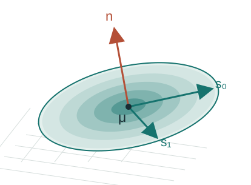
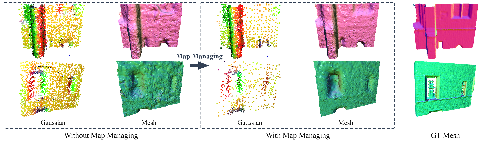
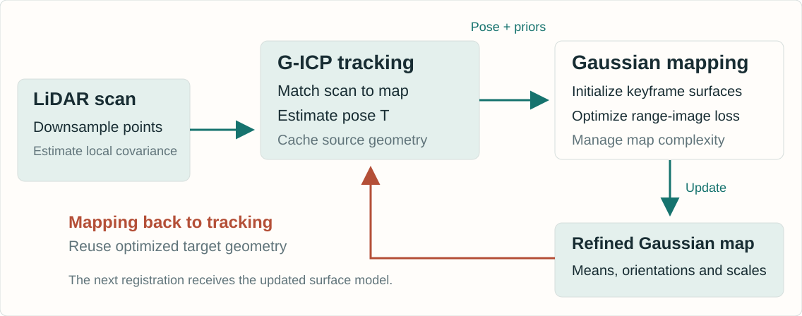
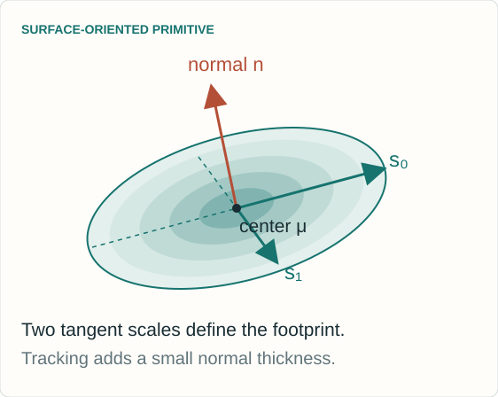
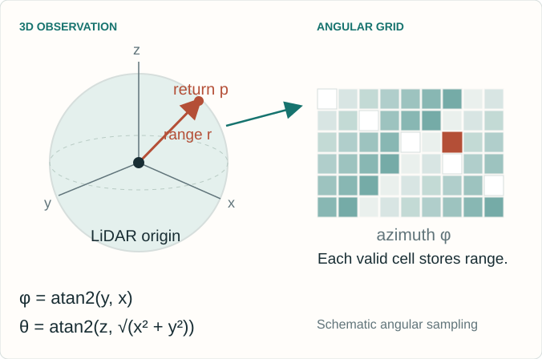
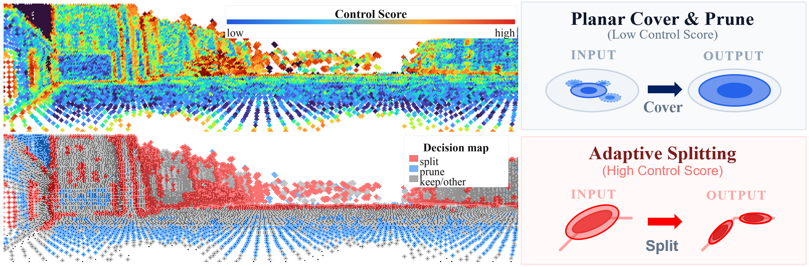
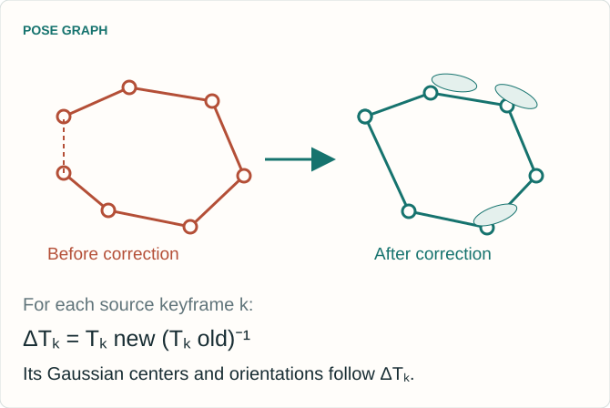

Expanded notes, equations and source links for the 28-slide lesson. Based on Tak et al., ECCV 2026, arXiv:2607.04127v1. The interactive labs use synthetic teaching models. All benchmark values are author-reported.
01 / 28
LiDAR Gaussian Splatting SLAM
Real-Time LiDAR Gaussian Splatting SLAM via Geometry-Aware Covariance Coupling
Tracking and mapping share the same geometry.
Local covariances shape a dense surface map. The refined map improves the next registration.

SeungJun Tak*, Yewon Jeon*, Jaeik Hwang, Suk Min Hwang, Seongbo Ha and Hyeonwoo Yu
Sungkyunkwan University · *Equal contribution · Independent reading companion
Explanation
This presentation explains the ECCV 2026 paper Real-Time LiDAR Gaussian Splatting SLAM via Geometry-Aware Covariance Coupling. It follows arXiv version 1, submitted on 5 July 2026, and separately identifies current repository details at commit c51abf31e82a4bf628df2965702ab36177d089cd. The authors are SeungJun Tak and Yewon Jeon, who contributed equally, Jaeik Hwang, Suk Min Hwang, Seongbo Ha and Hyeonwoo Yu. The central contribution is bidirectional reuse of geometric information between G-ICP registration and LiDAR Gaussian mapping. Three synthetic laboratories illustrate selected mechanisms. They do not execute the complete authors’ SLAM system or reproduce its reported benchmarks.
The deck begins with the map representation and the geometric statistics reused from registration. Each laboratory has an introductory slide immediately before it. The covariance laboratory estimates a real empirical eigensystem from synthetic neighbors. The registration laboratory solves a reduced two-dimensional fixed-correspondence problem. The budget laboratory applies explicit illustrative compression and splitting rules. The final section separates paper-reported results, release-specific implementation details and limitations. Expanded notes retain the assumptions and source references for every slide.
The paper allocates more primitives to detail and fewer to broad, redundant surfaces.

The goal is a compact surface representation that still supports reliable registration. Figure 5 shows the authors’ qualitative reconstruction comparison.
Explanation
LiDAR odometry can use sparse point maps, but dense reconstruction needs a richer representation. Gaussian maps can grow continuously as new keyframes arrive. More primitives increase registration, rendering and optimization cost, while corrupted geometry can influence later tracking. The paper addresses both resource growth and the feedback of geometric errors. Figure 5 is reproduced from the paper under CC BY 4.0 and shows qualitative Gaussian and mesh comparisons before and after map management, plus a ground-truth mesh. The figure is illustrative evidence rather than a numerical proof that all geometry or GPU memory improves. Quantitative map-size and peak-VRAM tradeoffs are examined later.
Registration initializes the map. Optimized Gaussian geometry supplies the next target.

Explanation
Incoming scans are downsampled and local neighborhoods provide source covariances for G-ICP. Tracking estimates the current pose against a recent, reliable subset of Gaussian means. On keyframes, cached source eigenvectors, standard deviations and registration residuals initialize new Gaussians and provide low-cost geometry signals. Mapping optimizes surface-oriented two-dimensional Gaussians using spherical LiDAR range images. The optimized Gaussian orientations and in-plane scales then construct the next target covariances directly, avoiding a new map-side nearest-neighbor covariance estimation. This is a coupled online pipeline. The two stages do not solve one unrestricted global optimization at every frame.
μ: 3D center q: orientation s₀, s₁: two in-plane scales α: opacity / reliability weight
Stored confidence \(u_i\) and control score \(c_i\) support tracking and map management.

Explanation
The map consists of surface-oriented 2D Gaussian primitives embedded in three-dimensional space. The paper stores the center, quaternion orientation, two in-plane scales and opacity, with extra confidence and map-control signals. It optimizes log-scale for positivity. The normal is perpendicular to the Gaussian’s tangent plane. For tracking, the surface is given a small normal thickness to form a nonsingular 3 by 3 covariance. This covariance is a geometric matching model, not automatically a calibrated posterior covariance of map position. The spherical projection describes how the sensor observes the map. It does not mean the Gaussian centers live on a fixed sphere.
Edge: one direction dominates. The normal remains ambiguous.
Scattered points: no unique tangent plane.
Noise and sparse sampling can distort these patterns.
Explanation
A local covariance summarizes centered second moments of neighboring LiDAR points. Its eigenvectors describe principal directions and the square roots of its eigenvalues describe standard deviations. The paper reuses the decomposition already produced in G-ICP tracking. A strong separation between the two tangent eigenvalues and the smallest eigenvalue supports a stable normal estimate. A line-like neighborhood leaves its normal less constrained, and isotropic variation gives no unique stable plane. Raw neighborhood covariance, regularized G-ICP covariance and a calibrated estimation uncertainty are distinct concepts. The laboratory shows empirical covariance, while the deployed tracker may normalize or regularize covariance for numerical stability.
The next slide computes its eigensystem from deterministic synthetic 3D points.
CONTROLS
Choose Plane, Edge or Scattered geometry.
Change tangent balance and isotropic noise.
Increase range to inspect the initial disk’s coverage.
READ THE RESPONSE
Inspect the three measured eigenvalues and principal axes.
Compare linearity and curvature proxies.
The disk follows the two largest directions. Its normal follows the smallest.
Explanation
This laboratory computes an empirical 3 by 3 covariance and its eigendecomposition from a seeded synthetic point neighborhood. It exposes tangent balance, isotropic noise and sensor range. The disk uses normalized tangent standard deviations with an illustrative range coefficient of 0.04 and a 2 metre scale cap. Those are teaching choices, not reported benchmark hyperparameters. The point coordinates and covariance are actually recomputed when controls change. Increasing noise can destabilize an inferred normal. Increasing range changes the toy initialization, not the empirical neighborhood’s underlying geometry. The lab isolates initialization and does not render or optimize a full LiDAR scan sequence.
The covariance laboratory is a deterministic synthetic teaching model. It computes an actual neighborhood covariance and eigenbasis, then shows how the tangent standard deviations and range influence an initialized surface disk. This is distinct from the authors’ full CUDA renderer, keyframe map and benchmark pipeline. The controls use illustrative units and constants as documented in the lab. Reset restores the deterministic starting scenario.
\(r_i=\max(\|\mathbf p_i\|,1)\) and \(\sigma_{i,j}=\sqrt{\lambda_{i,j}}\)
WHY RANGE APPEARS
Normalized G-ICP covariances mainly carry shape.
Multiplying by range supplies wider initial coverage for sparse distant returns.
WHAT CONTROLS THE EXTENT
The scale cap limits overly large primitives.
Mapping subsequently optimizes log-scale. Initialization does not freeze the surface.
Explanation
The tracker’s standard-deviation vector is sorted in descending order, and the two largest components define the tangent scales. G-ICP usually normalizes covariances for numerical stability. Their magnitude therefore need not represent physical point spacing. Equation 6 multiplies the normalized tangent standard deviations by range, with a lower range floor and an upper scale cap. The scalar κ in this initialization is a scale coefficient, distinct from the per-Gaussian in-plane scale ratio κ_i later used in tracking. The paper explains this as a way to reduce holes at long range and stabilize mapping. It does not imply that Gaussian size should grow without limit.
Learned opacity and sensing geometry jointly inform filtering.
This is a heuristic confidence, not a calibrated probability.
Explanation
The incidence term is the absolute cosine between the estimated normal and the sensor ray. A frontal return has an incidence cosine near one, while a grazing return is near zero. Equation 7 combines this term with an exponential range attenuation. Equation 8 uses the resulting confidence to initialize opacity within a chosen interval. The paper additionally defines trackability confidence γ_i=α_i u_i. These are sensing-geometry cues, not a fully calibrated probabilistic sensor model. The symbol c in Equation 7 is an incidence cosine, whereas c_i in Equation 9 is the separate complexity-control score. They should not be confused.
Small normal thickness τ keeps the matrix nonsingular.
REUSE
No fresh map-side k-nearest-neighbor covariance search.
Mapping changes the next registration’s target geometry.
Explanation
The trackable subset filters map primitives with a mask, keyframe recency and opacity. The keyframe index k_i is the last keyframe that updated a primitive, not its number of observations. The target points are Gaussian means, optionally downsampled further. For each target, the optimized orientation and in-plane scales construct a 3 by 3 covariance with a small normal thickness. The displayed τ² notation makes that thickness convention explicit. The paper describes the same construction without giving this exact matrix expression. Each covariance can be assembled in constant work once primitive parameters are available. Correspondence search itself still has a cost.
A separate scale-ratio proxy upweights stable planar targets.
Explanation
This slide expands the paper’s rigid transform T into rotation R and translation t so that the covariance rotation is dimensionally explicit. Source and target covariances define the Mahalanobis residual. A small normal variance penalizes disagreement across a surface strongly while allowing greater tangent displacement. A further scalar weight depends on the target Gaussian’s in-plane scale ratio. This scalar is distinct from the map-management control score. G-ICP alternates correspondence and pose estimation in the full system. The next laboratory deliberately fixes correspondences and uses an SE(2) model to make the weighting and objective visible.
A near-circular tangent disk has a smaller ratio and receives a larger clipped weight.
WHAT TO TRY
Toggle geometric weighting.
Add biased returns or perturb the initial heading.
Use Step or Solve and watch the real Mahalanobis objective change.
Weighting can help or hurt when geometry cues are wrong.
Explanation
The laboratory computes actual Gauss–Newton pose updates in two dimensions using fixed correspondences and isotropic source covariance. Its target covariances and scalar weights define a measurable Mahalanobis objective. The weight follows the paper’s min–max normalization of in-plane scale ratios and caps the reciprocal at ten. A small denominator guard handles degenerate synthetic ranges. The paper calls this scale ratio a curvature proxy, but it is not the covariance curvature term λ₂ divided by the eigenvalue sum. A near-circular tangent footprint is treated as a useful planar anchor, yet that shape alone does not prove that the underlying neighborhood is planar. The biased-return controls help expose this limitation.
This lab implements a deterministic synthetic SE(2) registration problem. Correspondences remain fixed and source covariance is isotropic. It exposes a genuine weighted least-squares objective and actual pose updates, while omitting nearest-neighbor association, scan deskewing, full SE(3) motion, map optimization and loop closure. The objective and the synthetic ground-truth pose error are different quantities. A lower objective need not mean a more accurate pose when returns are biased. The display uses the paper’s weighting formula, rather than the release’s fixed scale-ratio normalization.
Map predictions and observed returns share an angular grid.

SAME GRID
Observed range image: \(D(u,v)\)
Rendered map: \((\hat D,\hat A,\hat{\mathbf N})\)
Compare depth, opacity and normals at valid returns.
The map contains 3D surfaces. The range image is a sensor view.
Explanation
Each LiDAR point supplies range and angular direction. The current scan is represented on a spherical range-image grid. The map’s surface-oriented Gaussian primitives are rendered under the same spherical projection to predict depth, accumulated opacity and normals. This permits geometric supervision on corresponding pixels. The illustration uses azimuth φ=atan2(y,x) and elevation θ=atan2(z,sqrt(x²+y²)) as a standard spherical convention. Pixel indexing depends on the sensor intrinsics and field of view. The map itself remains a three-dimensional representation. The paper’s LiDAR-only optimization does not require an RGB photometric loss.
Align with G-ICP and rendered-depth surface normals.
The surface-normal term starts after densification begins.
SCALE
Penalize in-plane extent above \(s_{\max}\).
Large primitives can otherwise distort geometry.
Explanation
Equation 10 uses masked L1 depth error and positive-only binary cross-entropy for opacity at valid depth pixels. Missing returns are not treated by this term as supervised negative occupancy labels. Equation 11 aligns rendered normals with valid G-ICP normals and normals derived from rendered depth. The latter term is enabled only after densification starts for stability. Equation 12 penalizes the excess of the largest in-plane scale over a cap. Equation 13 combines these losses. The displayed outer weights 0.1, 1 and 10 are the reported implementation setting, not universal constants. The normal term has its own internal weights and masks. The scale penalty is a sum, whereas pixel losses use valid-pixel averaging, so weights are not directly comparable measures of influence.
Low score: candidate for planar compression. High score: candidate for splitting. This control score is separate from the scale-ratio weight used by G-ICP.
Explanation
The control score combines normalized linearity, covariance curvature and G-ICP residuals with weights 0.55, 0.30 and 0.15. Covariance eigenvalues are sorted λ₀≥λ₁≥λ₂. A line-like neighborhood gives high linearity. Isotropic or locally complex variation increases the curvature proxy. Residuals can indicate unmodeled structure, but also noise, motion or bad correspondence, so the score is a resource-allocation heuristic rather than a perfect semantic classifier. The release uses robust percentile normalization for covariance features and a valid-residual 95th percentile for residual scaling. The score c_i drives map management. It is not the normalized in-plane scale ratio κ̄_i that weights tracking.
The next slide illustrates score-driven allocation with explicit toy coverage rules.

Try plane compression and edge splitting separately, then together.
Explanation
Figure 3 is reproduced from the paper under CC BY 4.0. The paper’s planar procedure projects centers onto orthogonal planes, forms two-dimensional groups, selects low-score candidates with sufficient opacity, retains the highest-opacity representative, expands its tangent support to cover a quantile and removes covered redundant primitives. Each pass caps its pruning ratio. Splitting selects high-score, sufficiently opaque candidates and creates two children displaced symmetrically along the in-plane major axis, with a global split-ratio cap. The next lab is a smaller two-dimensional teaching construction. Its thresholds, coverage definition and split cap are explicit toy choices, and its count or coverage statistics do not reproduce the paper’s GPU-memory or F-score evaluation.
This laboratory computes covariance-derived features and a residual contribution for a synthetic scene, then applies two-dimensional coverage-preserving planar grouping and symmetric major-axis splitting. It reports actual primitive counts and coverage under the declared toy definition. It does not run the multi-pass three-dimensional implementation, differentiate a spherical rasterizer or simulate GPU runtime. Its low-score grouping and high-score splitting illustrate the intent of Section 3.5. Changing the thresholds can expose why an aggressive map budget risks erasing useful structure. These controls use synthetic data and do not modify any persistent map.
Loop closure corrects the map by keyframe pose deltas
The global correction is piecewise rigid across source keyframes.

AFTER A LOOP MATCH
Align the keyframe to the matched submap.
Add the relative-pose constraint and optimize the pose graph.
Move each keyframe’s Gaussians with its corrected pose delta.
The paper leaves full global Gaussian reoptimization open.
Explanation
The method uses loop closure to reduce accumulated drift. A source keyframe is aligned with the matched target submap to obtain a relative-pose constraint. Pose-graph optimization updates keyframe poses. Each Gaussian then receives the optimized-pose delta of its source keyframe. The result is a keyframe-wise piecewise-rigid map correction. This distinction matters: it does not jointly reoptimize every Gaussian parameter across every observation after each loop closure. The paper notes this can leave local inconsistencies after large corrections. The diagram is a conceptual illustration with arbitrary units and synthetic poses, not an evaluation trajectory.
The benchmark context determines what the numbers mean
All results shown here are reported by the authors, not rerun for this presentation.
DATA AND METRICS
ATE RMSE: trajectory translation error in metres.
Reconstruction: accuracy, completeness, Chamfer-L1 and F-score.
F-score threshold: 0.20 m. Mesh downsampling: 0.02 m. Distance truncation: 0.50 m.
COMPUTE AND POSES
AMD Ryzen 9 7900X NVIDIA RTX 4090 64 GB RAM
Online SLAM methods estimate poses.
Voxblox, VDBFusion and N³-Mapping use ground-truth poses in Table 2. Their FPS measures mapping only.
Explanation
Experiments include Newer College, Oxford Spires and KITTI Odometry. Trajectory error is absolute trajectory error RMSE in metres. The paper evaluates exported tracking-keyframe trajectories using EVO. The release’s standard trajectory export contains all frames, so reproduction should preserve the intended evaluation sampling and alignment protocol. Mesh metrics use 0.02 metre downsampling, a 0.20 metre F-score threshold and 0.50 metre truncation for distance outliers. The reported hardware is a Ryzen 9 7900X CPU, an RTX 4090 GPU and 64 GB RAM. Table 2 separates methods given ground-truth poses from methods estimating poses online. A mapping-only FPS for a ground-truth-pose baseline is not directly the same system measurement as tracking-plus-mapping FPS.
Table 2 reports online estimated-pose reconstruction and system throughput.
LIDAR-GS-SLAM · TABLE 2
Sequence
F-score (%) ↑
System FPS ↑
Chamfer-L1 (cm) ↓
Newer College Quad
86.78
22.15
11.32
Newer College Math
70.35
25.25
16.48
Oxford Observatory
56.89
17.99
20.83
Oxford Keble College
64.02
19.58
18.64
FOUR-SEQUENCE MEAN
69.51% F-score and 21.24 FPS
COMPARISON
Mean F: PIN-SLAM 50.61%, Splat-LOAM 46.46%.
Explanation
The well-known 86.78 percent F-score and 22.15 FPS pair is the Newer College Quad row, not a dataset-wide average. Across the four mapping sequences, the paper reports a mean F-score of 69.51 percent and mean system speed of 21.24 FPS. Oxford Observatory and Keble College run at 17.99 and 19.58 FPS, respectively, so a greater-than-20-FPS claim should not be applied to every sequence. The corresponding mean F-scores are 50.61 percent for PIN-SLAM and 46.46 percent for Splat-LOAM. LiDAR-GS-SLAM does not win each individual F-score row: for example, Splat-LOAM reports 73.66 percent on Math versus 70.35 percent here. Ground-truth-pose baselines occupy a separate block in the paper’s table.
Selected Table 1 rows show no single method wins every sequence.
ATE RMSE IN METRES · LOWER IS BETTER
Sequence
KISS-SLAM
PIN-SLAM
LiDAR-GS-SLAM
Newer College Quad
0.100
0.097
0.080
Newer College Math
0.151
0.071
0.160
Oxford Observatory
0.494
0.150
0.336
Oxford Keble College
0.367
12.196
0.177
KITTI 01
19.632
3.670
2.260
Dense reconstruction and trajectory estimation are different objectives. The table compares complete systems under the authors’ evaluation protocol.
Explanation
Table 1 reports ATE RMSE. The selected rows intentionally include both strong and weaker cases for the proposed method. It reports the lowest values among these three displayed methods on Quad, Keble and KITTI 01, while PIN-SLAM is better on Math and Observatory. The full Table 1 also includes SuMa and Splat-LOAM, and additional KITTI sequences. Those rows are available in the original paper and are not omitted to imply universal superiority. Table 1 gives 0.177 metres for Keble. Tables 3 and 6 use 0.212 metres for the full system in separate ablation runs. These values must retain their table context. This deck does not average those different experiments together.
Table 4 on Quad separates persistent map size from peak working memory.
QUAD · TABLE 4
Variant
Gaussians
Map (MB)
Peak VRAM (GB)
F-score (%)
Opacity prune only
239,175
9.6
2.9
87.179
Split
248,060
9.9
4.8
88.040
Plane prune
119,285
4.8
4.5
86.521
Split + plane prune
129,885
5.0
4.5
86.776
PERSISTENT MAP
Full management uses about 46% fewer primitives.
TRADEOFF
Peak VRAM rises from 2.9 to 4.5 GB in this ablation.
Explanation
The Table 4 baseline already uses opacity pruning. It is not an unmanaged map with no pruning at all. Adding split and plane-prune management reduces Quad’s final Gaussian count from 239175 to 129885, a reduction of about 45.7 percent, and map size from 9.6 to 5.0 MB. At the same time, peak VRAM increases from 2.9 to 4.5 GB. The full variant’s F-score is 86.776 percent compared with 87.179 for the opacity-pruning baseline. Split alone yields the highest Quad F-score in this table but uses more primitives and memory. These measurements support a quality-resource tradeoff. They do not justify a blanket claim that all memory, accuracy and speed measures improve simultaneously.
These controlled variants belong to their own experiments and metric definitions.
TRACKING TO MAPPING · TABLE 3
Quad variant
F-score (%)
Identity initialization
48.688
No range-adaptive scale
85.996
No G-ICP normal
85.899
Full
86.776
Covariance-based initialization has a large effect in this comparison.
MAPPING TO TRACKING · TABLE 5
Variant
ATE (m)
Tracking FPS
No GS feedback
0.099
17.69
No geometry weight
0.088
22.66
Full feedback
0.079
23.70
Tracking FPS differs from the complete system FPS in Table 2.
Explanation
Table 3 removes individual tracking-to-mapping ingredients. On Quad, identity covariance initialization yields a much lower F-score than the full system. Removing range-adaptive scale or the G-ICP normal also changes the result, although the differences are much smaller on this sequence. Table 5 examines mapping-to-tracking feedback. Its full variant gives ATE 0.079 metres and tracking throughput 23.70 FPS. The table does not explicitly name its sequence in the caption, so this deck does not assign it a dataset label beyond the source table. Tracking FPS is not the tracking-plus-mapping system FPS of Table 2. Ablations show effects in these implementations and scenes, not universal guarantees or fully isolated statistical causal estimates.
Covariance reuse is efficient, but bad local structure can propagate through the loop.
WHEN THE PRIORS WEAKEN
Sparse returns and weak geometric constraints.
Vegetation, moving objects and unreliable normals.
Sensor- and scene-dependent voxel size, scale limits and keyframe thresholds.
Confidence and shape scores remain heuristics.
WHAT THE PAPER LEAVES OPEN
Full global Gaussian reoptimization after loop closure.
Uniform trajectory superiority across environments.
Real-time operation on lower-power hardware.
A fixed map budget with a formal error bound.
Explanation
The paper’s limitations include degraded performance when local geometry is weak, the sensitivity of covariance and normal estimates to sparse or noisy observations, and the need to adapt keyframe and geometric thresholds to the sensor and environment. Vegetation and moving objects can produce geometry that is poorly described by stable local planes. The system’s feedback can then reuse an erroneous shape prior. Its geometry-control rules restrict growth, but are not a formal guarantee of a fixed global map size or bounded reconstruction error. Loop closure uses rigid updates by keyframe rather than global reoptimization of every Gaussian. Throughput measurements come from a high-end desktop GPU, and trajectory performance is competitive rather than uniformly best.
The released code makes the components inspectable
Use the paper for method claims and the pinned source for implementation details.
SOURCE AT COMMIT c51abf3
File
Role
gs_icp_slam.py
System setup and configuration
mp_Tracker.py
Tracking, covariance cues and confidence
mp_Mapper.py
Gaussian mapping and updates
scene/gaussian_model.py
Primitive state and map management
Linux, CUDA and datasets are required for the full system.
REPRODUCTION DETAILS
The release uses a fixed normalization of the in-plane tracking ratio. The demo follows the paper’s min–max formula.
The inspected Newer College config enables splitting but disables plane management.
To request the full Table 4 management variant, enable both flags.
Explanation
The repository is pinned here to c51abf31e82a4bf628df2965702ab36177d089cd. Its tracker computes the scale-ratio score as clip((largest/second-largest scale − 1)/3, 0, 1), and its FastGICP implementation applies min(1/(score+0.001),10). This fixed normalization differs from the min–max normalization in paper Equation 3. The teaching registration lab uses the paper formula. In configs/ncd.yaml at this commit, use_densify is true and use_plane_management is false. Both must be enabled to request the split-plus-plane-prune management variant. Zero stored map-control scores are unset or invalid sentinels excluded from management quantiles, whereas a zero normalized tracking ratio is valid and receives maximum weight. The full system needs its Linux/CUDA extensions and compatible sequence data. No benchmark run is implied by this presentation.
This is an independent educational companion for bailiping.com. The authors’ paper and repository remain the primary sources. Figures 3 and 5 are reproduced with attribution under the paper’s Creative Commons Attribution 4.0 license. The remaining explanatory diagrams are original illustrations. Reported numerical data are selected facts from the paper’s tables with the original dataset, units and evaluation context retained. The three browser laboratories use deterministic synthetic data and reduced mathematical models. They illustrate covariance geometry, weighted registration and map allocation rather than reproducing the complete SLAM pipeline. Related lessons on 3D Gaussian Splatting, frame registration and Gaussian-splatting SLAM provide background.